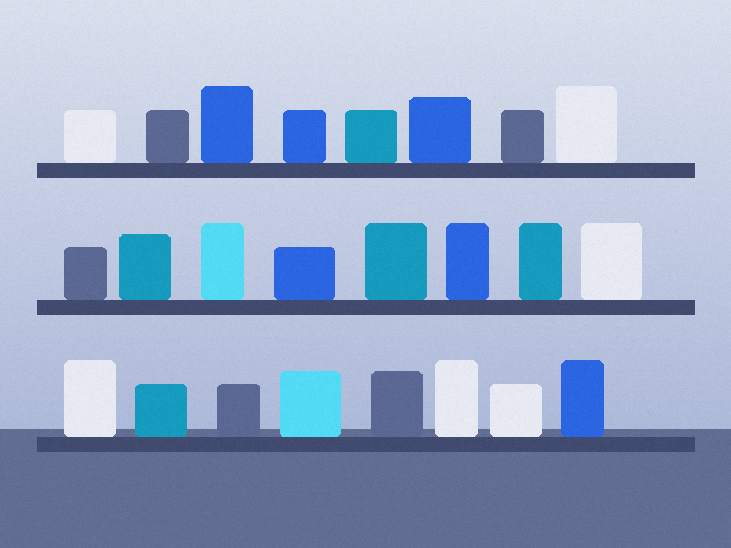
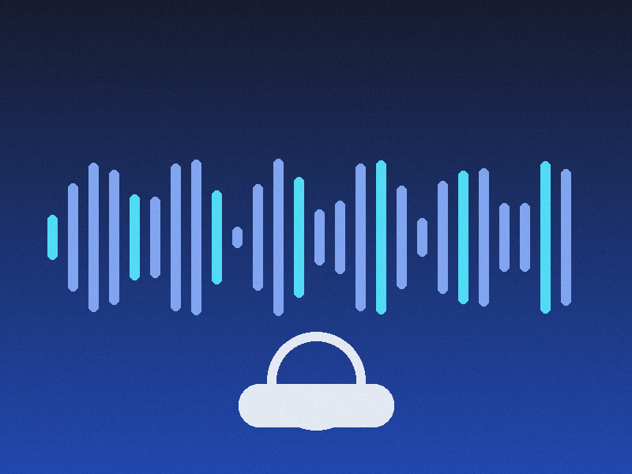

Enviamos shoppers a sus puntos de venta para medir, auditar y transformar la experiencia de sus clientes — con datos reales, no suposiciones.
Nuestros shoppers están entrenados por vertical. Saben qué mirar, qué preguntar y qué reportar en cada tipo de negocio.
Evaluamos desde la vitrina hasta el cierre de caja: presentación, inventario visible, protocolos de atención y tiempo de espera real.
Aplicamos el mismo escenario de evaluación en sucursales, turnos o competidores distintos. La comparación punto por punto revela dónde está la inconsistencia — sin intuición, con datos.
Documentamos el ciclo completo del servicio automotriz: recepción del vehículo, cotizaciones, comunicación durante el trabajo y entrega final — donde se gana o se pierde al cliente.
Evaluamos el journey completo en salud: la llamada para agendar, la consulta y la venta de productos o tratamientos — con empatía medible y claridad en cada paso.
Credenciales jerárquicas, matriz de ponderación, históricos por sucursal y módulo de competencia — todo en un solo panel, listo para actuar.
Shoppers certificados que pasan desapercibidos. Cada visita queda validada con geolocalización, fotos y recibos de compra.
Cada rol ve su propia vista: dirección general compara lo global, administración y RH sus indicadores, capacitación los puntos a reforzar y supervisión solo sus sucursales — sin datos que no le corresponden.
Cada criterio pesa distinto y usted define los pesos. El score final refleja sus prioridades, no un promedio genérico.
Gráficas por sucursal, franquicia o red completa — con la evolución de cada KPI a lo largo del tiempo.
Evaluamos marcas similares con el mismo guion: usted contra su competencia, lado a lado, en cada criterio.
Cada visita termina en un reporte con puntos de atención priorizados, recomendaciones concretas y evidencia verificable — exportable a PDF con formato para presentar a dirección.
Si una visita detecta un problema crítico, su equipo lo sabe en minutos — no al final del trimestre.
Cada evaluación sigue un proceso riguroso diseñado para eliminar sesgos y entregar evidencia, no opiniones.
Sectores, modalidades de evaluación y la plataforma conectados en un solo sistema — arrastre los nodos para explorar las relaciones.
La experiencia del cliente no termina en la puerta de la tienda. Evaluamos el journey completo, donde sea que ocurra — con base en el sureste de México y cobertura nacional.
Por principio, nunca mencionamos a nuestros clientes. Sin nombres, sin logos, sin casos publicados — su operación y sus resultados permanecen confidenciales, siempre.
Así se ve el material que documentamos en campo — verificable, auditado y siempre anonimizado. La discreción también es parte del reporte.


Es un shopper capacitado que visita su negocio haciéndose pasar por un cliente común. Documenta objetivamente su experiencia — tiempos, trato, cumplimiento de protocolos — usando guiones diseñados según sus estándares. El personal nunca sabe que está siendo evaluado, por lo que los datos reflejan la operación real.
Entre 1 y 2 semanas. La primera semana diseñamos los escenarios de evaluación a la medida del negocio y entrenamos a los shoppers; en la segunda ya están en campo. Los primeros reportes llegan en menos de 24 horas después de cada visita.
Cada visita se respalda con evidencia verificable: geolocalización, fotografías, audio y recibos de compra. Además, un segundo analista revisa cada reporte antes de entregarlo, y los criterios de evaluación son binarios o escalares — nunca subjetivos.
Sí. El benchmarking competitivo es uno de nuestros servicios más solicitados. Aplicamos el mismo guion de evaluación en sus sucursales y en las de sus competidores para comparar el desempeño punto por punto.
En su panel web, con acceso por roles: dirección ve tendencias y comparativos, operaciones ve hallazgos por sucursal y cada gerente ve su propia tienda. También enviamos resúmenes ejecutivos mensuales y alertas inmediatas ante hallazgos críticos.
Agende una demo de 20 minutos y descubra cómo se ve su operación a través de los ojos de un cliente real.